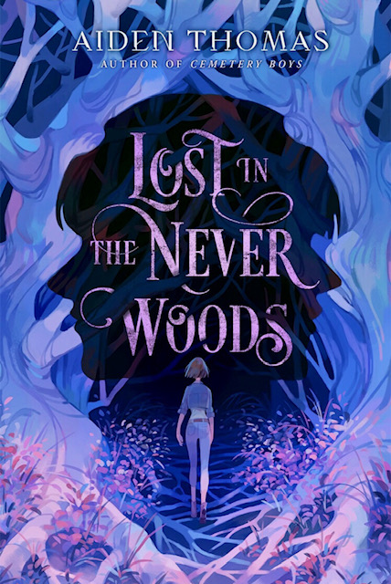

Lost in the Never Woods by Aidan Thomas
July 21, 2023 - August 11, 2023
 2.5
2.5
Audiobook
YA, fantasy, retelling
Review
I really wanted to like this book. I’ve adored Aiden Thomas’ other books and was so excited when I realized his next book was a fairytale retelling. It’s always been one of my favorite genres, and reading the Peter and the Starcatchers series got me into the genre, so I was happy to dive into another Peter Pan story. However, I was bored throughout so much of this book. The beginning and the end, especially, were entertaining but the middle just seemed to drag on.
I started losing interest somewhere around the time Wendy confronted Peter in the hunting shack and confirmed he was in fact trying to help the missing kids not hurt them. After that, so much of the novel was just Wendy trying to hide her activities from her family and friends because no one would believe her (which makes sense but also just got more annoying every time she brought it up and delivered a new lie) or her and Peter wandering around the town and woods with no real idea of how to help.
I will admit, the last few chapters were entertaining and fun. I suspected part of the plot twist, but didn’t quite grasp the scope of it until the big reveal. And while the lack of communication that exacerbated the reveal was annoying, I was so happy to see some out there theories make it into this version’s lore. However, I can’t help thinking so much of the novel was unnecessary to reach that point. Yes, technically all the development between Peter and Wendy was required for the climax of the story, but again it was all just so slow. It doesn’t fit into the supposed deadline and terrible consequences everyone will face if they fail to find the kids and stop their kidnapper. The ending, and it really was a fantastic ending in my eyes, can’t make up for my lackluster opinion of the rest of the novel.
Trigger Warnings
Mentions or depictions of:
child death, grief, kidnapping, gun violence, alcoholism, blood